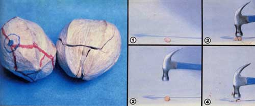

Hickory Nuts: The "Inside" Story
By Clyde Williams Ickes III
September/October 1980
One of my family's favorite autumn activities is sitting around the fire and cracking nuts . . . but even such a pleasurable pursuit can become pretty darn frustrating when the nuts continually shatter into tiny fragments trapped in the mazelike compartments of their shells. And, according to popular conceptions, one of the worst offenders in the hard-to-husk category is hickory (a member, as is the pecan, of the genus Carya).
Hickory nut meats are rarely found on grocery shelves, simply because the kernels are so difficult to extract in large pieces. But you can forage a bushel of the odd-shaped nuts in one afternoon . . . and then (believe it or not!) shell them yourself to reap mostly large, beautiful nutmeat "halves". In fact, it's my opinion that every fruit, nut, or seed has a hidden "zipper" or "door" somewhere . . . all a person has to do is find the combination and open 'er up!
THE MYSTERY IS SOLVED
A lot of folks think that hickories-which are native to most areas of eastern North America-are well-nigh impossible to crack neatly . . . but if you strike one of the nuts in just the right spot, the shell will fracture along clean lines almost every time. I discovered the secret quite by accident one day while shelling a bowlful: I began to notice that if I struck one of the nuggets in a particular place-ping!-a piece of shell would fly in one direction and bounce off the screen door. I soon found that the predictable breakage pattern was due to the interior architecture (or framework) of the pod itself. A membranous partition-called the septum-divides the kernel in such a way that when a nut is struck near its stem end (where the thickest part of that membrane attaches to the outer hull), the shock waves can travel along the septum and through the shell . . . causing the rugged casing to fall apart in six separate pieces.
AUTUMN FORAGING
Hickory nuts usually begin to drop from the trees in early autumn, as soon as they're loosened by rain or frost. But, if you want to forage a good supply, be sure to head for the nearest grove as soon as the nuts start falling . . . since this wild food is a favorite of squirrels. The plumetailed scavengers are skillful hickory hunters too . . . if you're not quick, they may plunder your entire local crop before you have time to collect any nuts at all!
Take a bucket or sack with you on foraging trips (or just wear an apron with big pockets), and use a small stick to scratch around in the leaves under each tree. Most of the nuts you pick up will still be encased in their rough, dark hulls . . . which have to be removed before you can start cracking them. Some gatherers stomp on their crop to dehusk the "fruits", but I usually pick the sections of the outer coverings off carefully, one at a time. Whichever way you remove the hulls, though, don't throw away those hand-staining pods . . . they can be used as mulch material for your garden.
Once you've toted your harvest home, you'll need to sort through the pile and remove any "rotten apples". (Discard nuts with discolored shells, grub holes, or a dry and wrinkled appearance.) The husked nuts should then be washed and dried before they're opened: Thoroughly rinse off all mud and debris and spread your hoard in the sun for a few days. It helps-during this period-to stir the nuts around every once in a while, so they'll dry out evenly.
THE "MEAT" OF THE MATTER
Once it's completely dehydrated, your hickory crop will be ready to be cracked open. First, assemble the few tools you'll need: a hammer, a nutpick, a brick, and a pan. (Don't try to use a lever-type nutcracker for this operation, because it will simply crush the meats into fragments.)
Place the brick on a hard, level surface (such as concrete) and set the pan next to it. Then grasp a nut between your left thumb and forefinger, with its stem end pointing toward the right. Balance the hickory on top of the brick (narrow edge downward) and aim your hammer at a spot about 1/3 of the way down from the stem, as shown in the photos.
Whack that spot with a short, sharp blow . . . and the nut will pop right open. Of course, the shells can't be counted on to split perfectly every time. The single most important factor will be the weight and striking force of the hammer blow . . . which you'll have to learn by experience. (In fact, you may have to crack a bushel or two of nuts before you really perfect the technique.)
As you open each nut, drop the meat-containing sections into the collection pan at the side of the brick. Then-when you've cracked a good supply of hickories-you can use a pick to remove those delicious kernels . . . and don't forget to throw the shell fragments in the bird feeder, since your feathered visitors love to peck at any tiny morsels you may have missed.
EAT'EM UP
Finally-once you've accumulated a large panful of nutmeats-sit back and relax. ( You're entitled to a bit of gloating over your accomplishment . . . after all, not every hickory forager knows how to break into those tenacious nuts most efficiently! ) Then, when you want to put the tasty crop to use, you can enjoy the oilrich nuggets raw, toasted, or added to cake and cookie recipes.
It's easy to roast the chewy pieces, either on the stove or in the oven. For range-top toasting, use a dry, unoiled pan-or cookie sheet-set over medium heat. Spread the nutmeats evenly across the pan and stir them often, until they turn light brown. Then quickly move the seeds to a cool surface, so they won't continue to brown.
For oven roasting, simply warm the nuts in a shallow pan-at 200°F-until they're a golden color. (You can make a wholesome nut butter from your roasted hickories . . . by grinding the meats in a blender, along with enough safflower oil to produce the desired texture and salt to taste.)
Hickory nuts can also be used as delicious substitutes for pecans or walnuts in bread and dessert recipes . . . simply add the same amount of the wild nuts as you would normally use of the other varieties. You might, for instance, want to try this Old-Fashioned Hickory Molasses Pie . . . which I adapted from a traditional recipe (using pecans) that's featured in The Deaf Smith Country Cookbook.
To make the family-pleasing dessert, fold together the following ingredients: 1-1/2 cups of unsulfured molasses, 4 beaten eggs, 2 tablespoons of whole wheat flour, 1/4 teaspoon of sea salt, 1/2 teaspoon of nutmeg, and 1 tablespoon of butter. (EDITOR'S NOTE: You can substitute carob powder for the whole wheat flour in this recipe if you'd like a richer, darker pie. For more information on cooking with carob, turn to the article beginning on page 42 of this issue.) When the ingredients are well blended, stir in 1 cup of finely chopped hickory nuts . . . and pour the mixture into a 9- or 10-inch unbaked whole wheat pie crust. Then cook the pie in a moderate (350°F) oven for 35-45 minutes.
You can enjoy the wild flavor of hickory nuts in lots of dishes, once you've mastered the art of removing the meats. And-as you now know-it doesn't have to be as hard to crack hickories as their "bad" reputation might have led you to believe. I've been shelling the tasty nuts for a lot of years, and I can tell youfrom experiencethat the wild delicacies are well worth the extra effort and practice that's required to learn their "secret"!
EDITOR'S NOTE: You can read more about foraging for hickory nuts in William James's article "By Hickory Dickerin', Doc!" in MOTHER NO. 53, page 72. Back issues are available for $8.00 each-plus $1.00 shipping and handling per order from THE Mother Earth News(restricted) P.O. Box 70, Hendersonville, North Carolina 28791.
The Deaf Smith Country Cookbook, an excellent guide to the preparation of natural foods, can be found in many good bookstores or ordered for $5.95-plus 95 cents shipping and handling-from Mother's Bookshelf, P.O. Box 70, Hendersonville, North Carolina 28791.
|
 ABOVE LEFT: If you hit a hickory nut on the ""bull-eye - a point about 1/3 of the way down from its stem - the husk should fracture approximately along the lines drawn on the sample pictured here. (The nut on the right has been cracked, and glued back together.) ABOVE: RIGHT: The sequence of steps used in opening one of the tough nuts. [1] Lay the nugget on its side and raise your hammer several inches above it. [2] Aim for that optimum impact spot. [3] Whack the nut sharply... and [4] it'll break cleanly into several pieces, from which you can extract the meats. |
 Once you've cracked them, hickory nuts are delicious either raw or roasted... and can be used in place of other nutmeats in recipes, such as this Old-Fashioned Hickory Molasses Pie (which is based on a traditional pecan pie ""receipt""). |
|